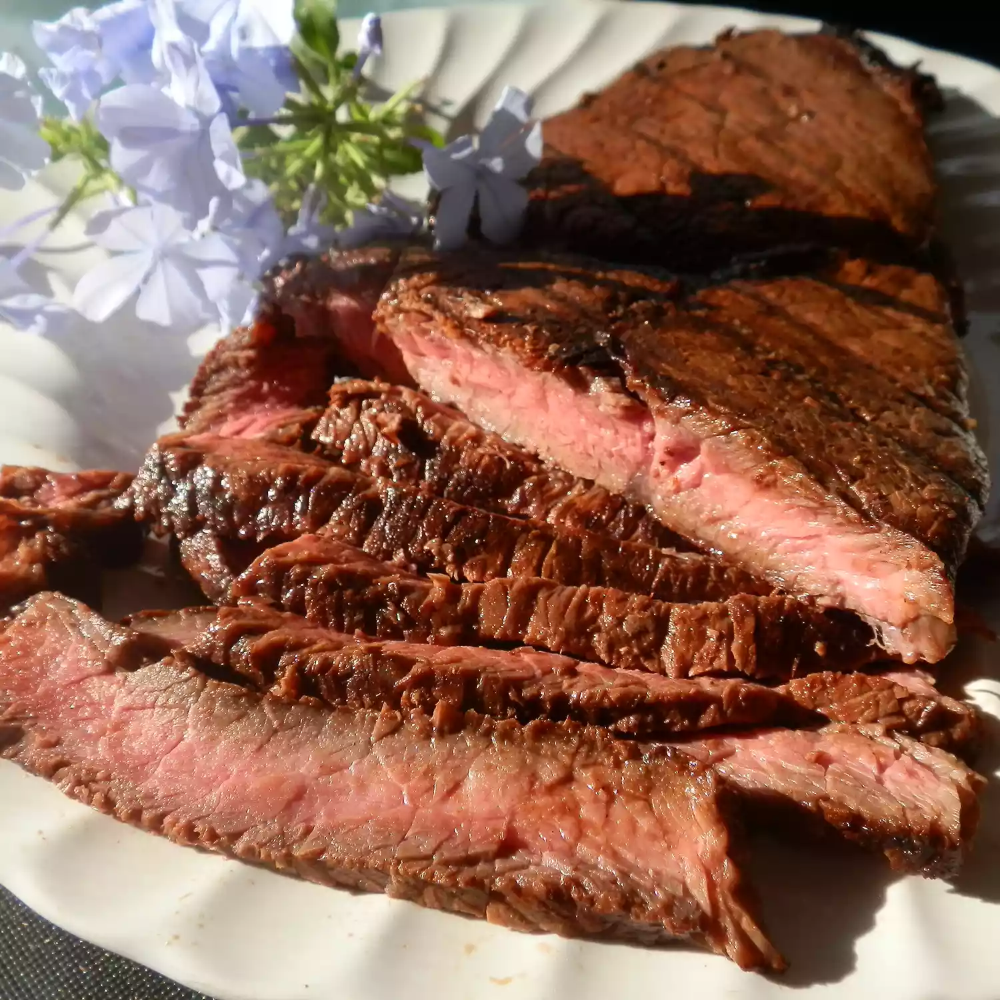

Sirloin Steak with Garlic Butter
Who doesn't love a good steak? This recipe will give you the perfect garlicy steak in just half an hour!
- Prep Time: 20 mins
- Cook Time: 10 mins
- Total Time: 30 mins
- Servings: 8
Ingredients
- 1/2 cup butter
- 4 cloves garlic, minced
- 2 teaspons garlic powder
- 4 pounds beef top sirloin steaks
- salt and pepper to taste
Instructions
- Preheat an outdoor grill for high heat and lightly oil the grate
- Melt butter in a small saucepan over medium-high heat; stir in minced garlic and garlic powder. Set aside.
- Season both sides of each steak with salt and pepper.
- Place steaks on a preheated grill and cook 4 to 5 minutes per side. An instant-read thermometer inserted into the center should read 140 degrees F for medium doneness
- Transfer steaks to warmed plates; brush the tops liberally with garlic butter and allow to rest for 2 to 3 minutes before serving.